Back
Intimacy
Development

Rules
Game ke Rules
×
Is baar, question padhne ke baad, dono jawab denge
Yeh stage ek doosre ko thoda aur jaanne ke liye hai
Of course, tum dono apne jawab ke baare mein baat kar sakte ho
Enjoy karo! 🍻
Questions load ho rahe hain...
Next Question
×
Answer
Pehle kisi question par click karo!